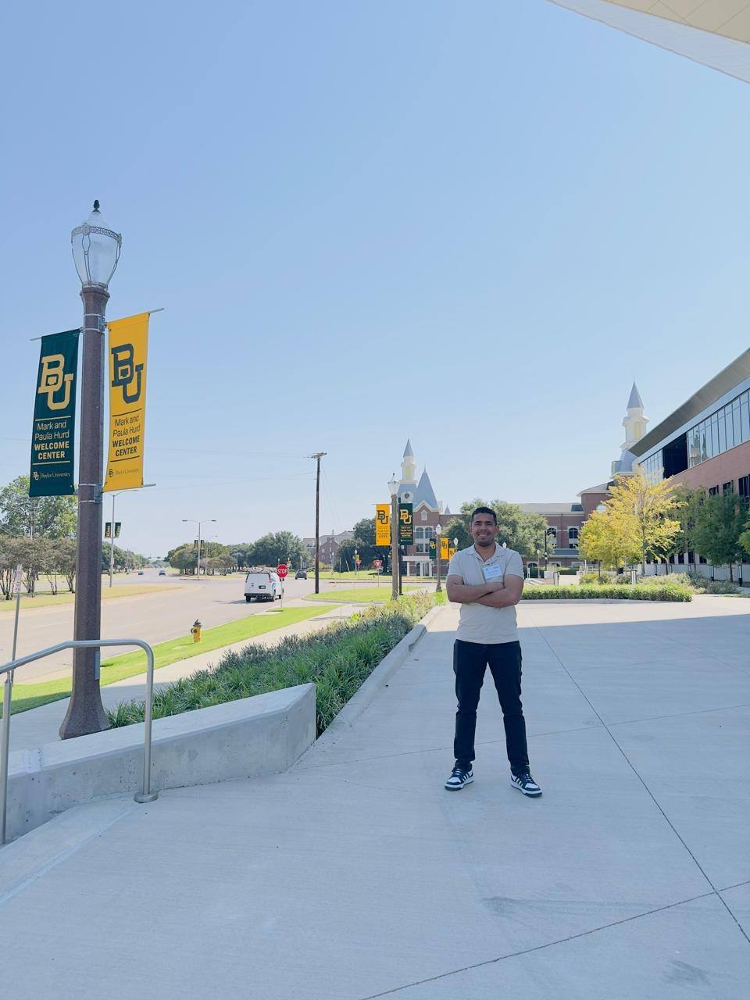
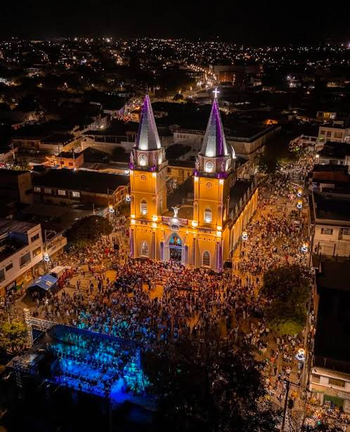
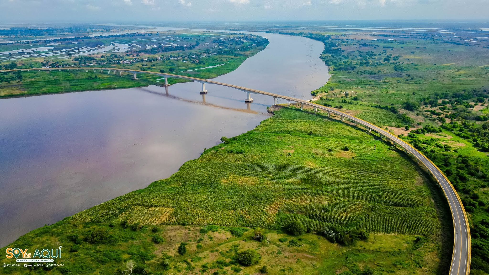

Numerical analysis
Finite element methods, stability, convergence, and error analysis.
I am a PhD student in Applied Mathematics at Universidad del Bío-Bío, Chile. My research focuses on numerical analysis, finite element methods, and mathematical modelling of reverse osmosis processes. My PhD thesis advisor is Ricardo Oyarzúa, and my co-advisor is Giordano Tierra.

Mathematical analysis and numerical approximation of coupled systems of partial differential equations.
Finite element methods, stability, convergence, and error analysis.
Well-posedness and numerical approximation of coupled flow and transport models.
Mathematical modelling of desalination processes and membrane transport.


Image sources: CatedralDeMagangue · SoydeAQUÍ.com · Map data © OpenStreetMap